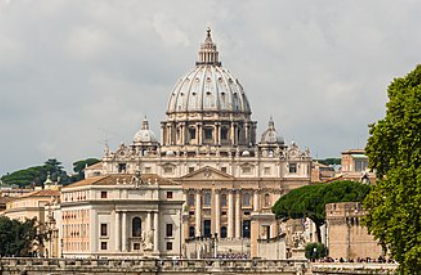
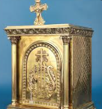
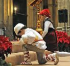
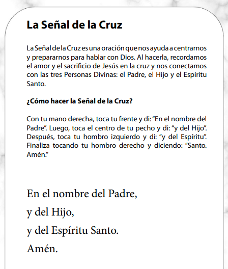
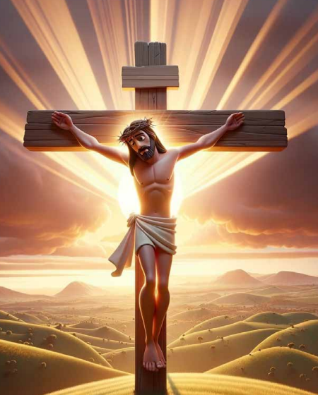

| PRIORIDAD | ACCIÓN | FORMACIÓN |
| 1 | Llevar al conocimiento de la fe | Teología Dogmática |
| 2 | Iniciar en la celebración del misterio | Liturgia |
| 3 | Formar para la vida en Cristo | Espiritualidad |
| 4 | Enseñar a orar | Lectio Divina |
| 5 | Introducir en la vida comunitaria | Doctrina Social |
| 6 | Impulsar a la misión | Misión |
| 7 |
| EXPLICACIÓN | DETALLE |
|---|---|
| INGRESAR CON ALEGRÍA Y RESPETO |
 |
| LA LUZ Indica la presencia de Cristo en el sagrario |
 |
| EL SAGRARIO Código de Derecho Canónico (c. 934–944): El Santísimo Sacramento debe estar reservado en un sagrario fijo y visible, con una lámpara encendida que indique su presencia. Si la lámpara está apagada, es señal de que el sagrario está vacío. |
 |
| EL SALUDO GENUFLEXIÓN (IGMR, n. 274): La genuflexion significa adoración y se reserva para el Santísimo Sacramento, Por tanto, solo se hace genuflexión si el sagrario contiene la Eucaristía. |
 |
 |
 |
| EL SILENCIO Y ORACIÓN El silencio no es ausencia de sonido. Es espacio para escuchar lo importante. |
|
| DESPEDIDA y Oración: GRACIAS POR EL MOMENTO Y PIDAMOS LA GRACIA DE SER CADA VEZ MEJORES CRISTIANOS |
Resumen de lo aprendido y tarea: Dios esta PRESENTE en el Sagrario SALUDAR como muestra de afecto y respeto PROPONER INICIAR EL CORO Y LECTORES Grupo de WhatsApp para enviarles (Pedir un número a cada niño) 1. El tema 2. Asistencia 3. Informes |
| ELEMENTO | EL ARCA | EL SAGRARIO |
|---|---|---|
| Sentido | Signo de la presencia divina | Presencial real de Cristo |
| Contenido | Tablas de la ley, vara de Aarón, el maná | Cristo mismo |
| Acceso | El sumo sacerdote una vez al año | El sacerdote en cada misa |
| Función | Recordar la alianza | Renovar la alianza |
| Signo | Los querubines | La luz |
| OBJETO | SIGNIFICADO | |
|---|---|---|
| ITE MISSA EST (latín) | Vallan han sido enviados | |
| Nombres | Eucaristía, Cena del Señor, Fracción del Pan, etc. | |
| EL AÑO LITÚRGICO Y LAS VESTIDURAS | ||
| TIEMPO | COLOR | SIGNIFICADO |
| ADVIENTO | Morado | Penitencia, Preparación |
| NAVIDAD | Blanco | Pureza, Alegría |
| CUARESMA | Morado | Conversión, Penitencia, Preparación |
| TRIDUO PASCUAL | Blanco, Rojo(Viernes Santo) | Martirio, Espíritu Santo |
| PENTECOSTÉS | Rojo | Fuego del Espíritu Santo, La sangre de Cristo y los Mártires |
| TIEMPO ORDINARIO | Verde | Esperanza, Crecimiento |
| COLOR | REFERENCIA | ORIGEN | USO | SIGNIFICADO |
|---|---|---|---|---|
| Púrpura | Éxodo 25:4; 26:1, 31, 36; 28:5–8, 15, etc. | Teñida con el caracol Murex, extremadamente costosa → símbolo de realeza, dignidad y autoridad divina. | Cortinas del Lugar Santo, velo del Lugar Santísimo, ephod y pectoral del sumo sacerdote. | Representa a Dios como Rey de reyes y, en sentido mesiánico, prefigura a Cristo como el Rey Sacerdote (Salmo 110:4; Hebreos 5–7). |
| Escarlata / Carmesí | Éxodo 25:4; 26:1, 36; 28:5–8, 15, 33. | Tinte extraído de insectos (como el coccus ilicis), asociado a la vida, la sangre y la expiación. | Cintas en los faldones del efod, borlas del velo, cintas en las varillas del arca. | Evoca la sangre de la alianza (Éxodo 24:8) y la purificación ritual (Levítico 14:4–6; Números 19:6). En el Nuevo Testamento, se vincula con la sangre redentora de Cristo (Hebreos 9:19–22). |
| Azul (tinte de añil o tekhelet) | Éxodo 25:4; 26:1, 31, 36; 28:5–8, 15, 31. | Tinte raro, obtenido del molusco Hexaplex trunculus, asociado al cielo y a lo divino. | Hilo azul en las borlas del manto sacerdotal (Números 15:38–39) y en los tejidos del Tabernáculo. | Simboliza la presencia celestial de Dios, su fidelidad a la alianza, y la obediencia a sus mandamientos (Números 15:39–40). En la tradición judía, el tekhelet recuerda "los caminos del Señor" (cf. Éxodo 24:10). |
| Lino blanco (lino fino) | Éxodo 25:4; 26:1; 28:5, 8, 39; Levítico 16:4. | Fibra vegetal purificada, símbolo de pureza, santidad y justicia. | Túnica interior del sumo sacerdote (Levítico 16:4), cortinas, velos, turbantes. | Representa la santidad moral y ritual requerida para acercarse a Dios, y anticipa la justicia de Cristo (Apocalipsis 19:8: "la justicia de los santos") |
| COLOR | REFERENCIA | ORIGEN | USO | SIGNIFICADO |
|---|---|---|---|---|
| Violeta | No aparece como color litúrgico directo en el AT, pero se asocia al púrpura y al escarlata en contextos de penitencia y realeza humana (cf. Jer 10:9; Lam 4:5; Est 8:15). En el NT: Jesús coronado de espinas con manto púrpura (Mc 15:17) y escarlata (Mt 27:28) — señal de burla a su realeza y pre figuración de su sacrificio. | Procede del uso medieval para señalizar tiempos de conversión y espera: Adviento y Cuaresma. Reemplaza gradualmente al negro en muchos lugares por su tono más sobrio y regio. | Adviento y Cuaresma; también en misas votivas de penitencia o reconciliación. | Penitencia, conversión, esperanza mesiánica y realeza humilde de Cristo. Es violeta —no púrpura ni escarlata— para equilibrar realeza (púrpura) y expiación (escarlata), recordando que el Mesías reina desde la cruz. |
| Blanco | Lino blanco (shesh) en las vestiduras sacerdotales (Éx 28:39–43), en el velo del Santo de los Santos (Éx 26:31) y en la vestimenta de los ángeles (Dn 7:9; Ap 15:6). Simboliza pureza, santidad y justicia divina. | Adoptado desde los primeros siglos cristianos para celebraciones de gloria: Pascua, Navidad, fiestas de ángeles y santos no mártires. | Navidad, Pascua, Solemnidades del Señor (Trinidad, Corpus Christi, Cristo Rey), fiestas de la Virgen y santos no mártires, bautismos, bodas. | La resurrección gloriosa, la divinidad de Cristo, la santidad de Dios y la justicia impartida a los bautizados. Es el blanco del AT elevado: no solo ausencia de pecado, sino presencia radiante de la vida divina. |
| Rojo | Escarlata/carmesí (shani) en el Tabernáculo (Éx 25:4–5; 26:1), en el velo (Éx 26:31) y en la vestidura del sumo sacerdote (Éx 28:5–6). También en la sangre de los sacrificios (Lev 17:11) y en la “cuerda escarlata” del espía (Jos 2:18). | Desde el siglo IV se usa para Pentecostés (fuego del Espíritu) y martirio (sangre derramada). El rojo litúrgico evoca tanto la sangre de Cristo como la fuerza del Espíritu. | PENTECOSTÉS, Domingo de Ramos, Viernes Santo, fiestas de apóstoles y mártires, confirmación. | El amor que se entrega hasta la muerte (Cristo), la fuerza transformadora del Espíritu Santo y el testimonio fiel hasta la sangre (mártires). Es el escarlata |
| Verde | • Éxodo 25–28: No aparece explícitamente como color litúrgico en el Tabernáculo (donde predominan azul, púrpura, escarlata y lino), pero el verde está implícito en la vida misma de la creación: "Dijo Dios: 'Produzca la tierra hierba... y árbol frutal que dé fruto según su género' (Génesis 1,11–12). • Salmo 23,2: "Me hace descansar en verdes prados" — imagen de pasto fresco, vida abundante, providencia divina. • Ezequiel 17,24: "Y sabrán todos los árboles del campo que yo, el Señor, he abatido al árbol alto y exaltado al bajo..." → el verde como signo de restauración y esperanza viva. | • Surgió formalmente en el siglo VIII–IX, cuando se consolidó el Calendario Romano y se distinguió claramente el Tiempo Ordinario (los 33 o 34 domingos fuera de Adviento, Navidad, Cuaresma y Pascua). • Reemplazó gradualmente a otros tonos (como gris o marrón) usados antiguamente para estos tiempos “neutrales”, adoptando el verde por su fuerza evocadora de crecimiento, madurez espiritual y constancia en la fe. | • Se usa durante el Tiempo Ordinario, es decir, en los domingos y días feriales que no pertenecen a ningún tiempo privilegiado (Adviento, Navidad, Cuaresma, Pascua). • También puede usarse en misas votivas (ej. misa de la Santísima Trinidad, del Sagrado Corazón) y en misas para necesidades de la Iglesia, siempre que no haya otro color prescrito. • No se usa en Adviento, Navidad, Cuaresma, Semana Santa ni Domingo de Resurrección (donde prima el blanco o el rojo), ni en festividades de martirio (rojo) o penitencia (violeta). | • Vida espiritual en crecimiento: representa la madurez de la fe, el fruto del Espíritu Santo (Gálatas 5,22–23: amor, alegría, paz, paciencia…), la perseverancia y la formación continua en la discipulado. • Esperanza viva y renovación constante: como la vegetación que renace tras la sequía o el invierno, así la gracia divina sostiene y renueva la vida cristiana día a día. • Iglesia en misión: el verde también evoca la misión evangelizadora —la Iglesia como árbol que da fruto (Juan 15,5: "Yo soy la vid, vosotros los sarmientos"). |
| Negro | No aparece como color litúrgico instituido, pero sí como símbolo fuerte: En Job 30,28–30, el luto se describe con vestiduras “oscurecidas” (kush —negro o ceniciento); En Lamentaciones 4,8, los hijos de Sión están “más negros que el carbón”, imagen de la desolación; En Apocalipsis 6,12, el sol se vuelve “negro como un saco de cilicio”: signo de juicio y fin de los tiempos. Importante: No hay mandato bíblico para usar negro en culto, pero sí una tradición simbólica arraigada en la experiencia humana del duelo y la contrición radical. |
Desde los primeros siglos, el negro fue usado en Occidente para las exequias y en días de gran penitencia (como Viernes Santo hasta el siglo XX). En el Ordo Romanus del siglo VIII ya se menciona vestis nigra para funerales. Durante la Edad Media, se consolidó como color de la muerte física y espiritual. | Uso litúrgico actual (Misal Romano, 2002 / Institutio Generalis Missalis Romani, n.
346):
«El color negro puede usarse en las exequias de los difuntos y en otras celebraciones fúnebres». Es opcional, no obligatorio. Hoy predomina el violeta (por su dimensión penitencial y esperanzadora) o incluso el blanco (por la resurrección y la luz pascual). El negro está permitido, pero su uso ha disminuido notablemente desde el Vaticano II, por una preferencia pastoral hacia la dimensión victoriosa de la muerte en Cristo. |
No representa desesperación, sino la oscuridad asumida por Cristo en la cruz (“Dios mío, ¿por qué me has abandonado?”, Mc 15,34), y la noche antes de la aurora pascual. Su uso hoy evoca una contrición sin máscara, una entrega total ante la muerte —pero siempre en tensión con la esperanza: por eso, muchas diócesis lo reservan solo para celebraciones muy sobrias, sin música ni flores, y con lecturas que enfaticen la resurrección (Ez 37,1–14; Jn 11,17–27). |
| Rosa |
Color de la alegría intermedia, el alivio en la penitencia, la anticipación gozosa | Su uso se remonta al siglo IX en Roma, cuando el Papa concedía a los obispos una
casulla rosada para celebrar la tercera dominica de Adviento (Gaudete) y la cuarta de Cuaresma
(Laetare), como señal de que la alegría pascual ya se acerca. La palabra Gaudete («alegraos») y
Laetare («regocíjate») vienen ambas de las lecturas de esas misas (Fil 4,4 y Is 66,10–11). El rosa surgió en la liturgia romana medieval, vinculado a la práctica de usar vestiduras teñidas con mezclas de tela roja y blanca, o con tintes menos intensos (como el crocus o azafrán diluido). Su formalización se dio con la Ritus servandus in celebratione Missae (siglo XVI) y fue codificada en el Caeremoniale Episcoporum (1600), permitiendo su uso solo en dos domingos específicos: Domingo Gaudete (III Domingo de Adviento), del latín gaudete (“alegraos”, Flp 4,4). Domingo Laetare (IV Domingo de Cuaresma), del latín laetare (“alegraos”, Is 66,10). Estos domingos son “pausas jubilosas” dentro de periodos penitenciales: anuncian ya la proximidad de la Navidad o la Pascua. |
Obligatorio solo en esos dos domingos, según el Misal Romano (2002, n. 346).
No se usa en otros días, ni en misas votivas, ni en festividades de santos —ni siquiera en la
Inmaculada Concepción o la Asunción. En la liturgia actual, se permite también en las vestiduras del celebrante, los diáconos y acólitos, así como en los paramentos del altar y los tapices (si son coherentes con el rito). No reemplaza al violeta: es una excepción ritual, no una alternativa. |
El rosa no es “un rojo atenuado” ni “un blanco rosado”: es un color de gozo esperanzado. Teológicamente, expresa: La alegría escatológica ya presente, aunque no plenamente realizada (“ya, pero no todavía”); La ternura divina que interrumpe la severidad de la conversión, como una sonrisa materna en medio de la disciplina; La certeza de la promesa cumplida: Cristo viene —y su venida cambia el tono de la espera. Es, pues, el color de la confianza gozosa en la fidelidad de Dios, que nunca deja sin consuelo a su pueblo (Is 40,1). |
| Dorado | 1. Referencia bíblica El dorado no aparece como color litúrgico en sentido técnico en la Biblia —no hay mandato explícito como con el violeta (Éx 28,5–8) o el rojo (Éx 25,4; 26,1). Sin embargo, el oro sí tiene una presencia constitutiva y simbólicamente cargada en el culto del Antiguo Testamento: En el Tabernáculo: "Harás también el arca de madera de acacia… la cubrirás por dentro y por fuera con oro puro…" (Éx 25,10–11). El arca, el propiciatorio, la mesa de los panes de la proposición, el candelabro de siete brazos y el altar del incienso fueron todos revestidos o fabricados enteramente en oro (Éx 25–30). En el Templo de Salomón: "Recubrió el templo por dentro con oro fino…" (1 Re 6,20–22); incluso las paredes, puertas y suelos estaban revestidos de oro. En el Apocalipsis, el oro se asocia a la gloria divina y la eternidad: "El que hablaba conmigo tenía una caña de medir… y me dijo: ‘Levántate y mide el templo de Dios…’" (Ap 11,1), seguido de descripciones donde lo dorado evoca la santidad inaccesible y la presencia trascendente: "Su cabeza y sus cabellos eran blancos como lana blanca… sus ojos como llama de fuego… sus pies semejantes al bronce candente…" (Ap 1,14–15), pero también "la ciudad era de oro puro, semejante al vidrio limpio" (Ap 21,18). El oro, pues, no es un color para vestimentas, sino el metal de la presencia divina, el material del lugar más santo —símbolo de lo inmutable, lo incorruptible, lo divino por naturaleza (cf. Sab 7,9; 1 P 1,7). |
El uso del dorado en vestimentas litúrgicas no proviene de un decreto antiguo, sino de
una evolución gradual desde la alta Edad Media, cuando los paramentos comenzaron a incorporar hilos de
oro tejidos en seda (especialmente en Bizancio y luego en Occidente). En el siglo IX–X, los pallia y
casullas imperiales usaban oro para expresar la dignidad del misterio celebrado. A diferencia de los colores "oficiales" regulados por el Caeremoniale Episcoporum (1600) o el Codex Rubricarum (1960), el dorado nunca fue incluido como color propio en los libros litúrgicos oficiales —pero sí fue aceptado por costumbre y autorización implícita como alternativa al blanco, rojo o verde, especialmente en solemnidades mayores (Navidad, Pascua, Corpus Christi, festividades de Apóstoles y Santos mártires). La Congregación para el Culto Divino aclara en Redemptionis Sacramentum (2004, n. 120): "Se permite el uso de vestiduras doradas o plateadas, especialmente en las solemnidades y fiestas, como alternativa al blanco, rojo o verde." |
El dorado no aparece como color obligatorio en el Ordo Missae ni en el Caeremoniale
Episcoporum, pero sí está expresamente reconocido y regulado en la instrucción postconciliar
Redemptionis Sacramentum (2004), n. 120: "Adhiberi potest etiam color aureus, qui in celebrationibus sollemnioribus Domini, praesertim in Natali et Resurrectione, uti potest." («También puede usarse el color dorado, que puede emplearse en las celebraciones más solemnes del Señor, especialmente en la Natividad y en la Resurrección»). Esto significa que el dorado no sustituye al blanco, sino que lo realza: es un color facultativo y complementario, reservado a las solemnidades más altas del misterio pascual y encarnacional —no para ocultar el blanco, sino para intensificar su esplendor. Su uso está autorizado tanto en vestiduras sacerdotales como en paramentos (antependios, cortinas, paños de altar), siempre que no contravenga la sobriedad y dignidad del rito. No se usa en tiempo de Adviento o Cuaresma (donde prevalece el violeta o el morado), ni en fiestas de santos mártires (rojo) o en tiempos ordinarios (verde), salvo excepciones muy específicas (como una solemnidad local con especial tradición dorada, siempre con licencia eclesiástica). |
El dorado no es un color simbólico por asociación cultural (como el rojo con la
sangre), sino por su naturaleza física y su función sagrada en la Escritura: Es el único metal que no se corrompe, no se oxida, no se desgasta: imagen perfecta de la inmutabilidad divina (Mal 3,6: «Yo, el Señor, no cambio»; Sb 7,25: «Es más pura que la luz, y su esplendor no se empaña»). En el Antiguo Testamento, el oro es materia del Tabernáculo (Éx 25–28): el arca, el propiciatorio, los candelabros, los vasos sagrados —todo lo que toca la presencia de Dios debe ser de oro puro (Éx 25,11; 25,24; 25,31). No es lujo, sino signo de lo inaccesible, lo santo, lo trascendente. En el Nuevo Testamento, el oro aparece en los dones de los Magos (Mt 2,11) como reconocimiento de la divinidad de Cristo: no un regalo para un rey terreno, sino para el Rey de Reyes, cuya naturaleza es «luz de luz, Dios verdadero de Dios verdadero». El oro apunta a la hipóstasis divina del Verbo encarnado, distinguiéndolo radicalmente de toda criatura. Por eso, litúrgicamente, el dorado no expresa una emoción humana (como el violeta expresa penitencia o el verde esperanza), sino una realidad ontológica: la gloria de Dios hecho visible, la doxa que resplandece en la Pascua y se revela en la Encarnación. No es un color “festivo” en sentido emotivo, sino “teofánico”: señala el momento en que lo invisible se hace tangible, lo eterno irrumpe en el tiempo |
| POSTURA | SIGNIFICADO | MOMENTOS |
|---|---|---|
| DE PIE Jesús viene |
respeto atención disponibilidad dignidad de hijos de Dios alegría de la Resurrección Es la postura de quien recibe a alguien importante y está listo para responder. |
canto de entrada saludo inicial Evangelio Credo Oración de los fieles Padre Nuestro bendición final |
| SENTADOS Jesús habla |
escucha tranquila actitud de discípulo reflexión acogida interior Es la postura del que aprende del Maestro. |
primeras lecturas primeras lecturas salmo (según costumbre local a veces sentados) homilía ofertorio en algunos momentos momentos de silencio |
| ARRODILLADOS Dios está aquí |
adoración humildad reverencia profunda amor entregado reconocimiento de que Dios es grande y santo |
Depende algo de las normas y costumbres del país, pero frecuentemente: durante la consagración después del Cordero de Dios en algunos lugares adoración eucarística |
| GESTOS ==> EL SILENCIO EN LA MISA | ||
| El silencio en la Misa es uno de los aspectos más olvidados y, al mismo tiempo, más
importantes. Muchos piensan que participar es solo hablar, cantar o responder, pero la Iglesia enseña
que también se participa guardando silencio sagrado. El silencio en la Misa no es vacío: es oración. |
No es simplemente ausencia de ruido. Es un silencio lleno de sentido para: escuchar a Dios meditar la Palabra adorar a Jesús pedir perdón dar gracias unir el corazón a lo que se celebra Cuando calla la boca, puede hablar el corazón. |
MOMENTOS IMPORTANTES DE SILENCIO EN LA MISA A. Antes de comenzar Al entrar al templo. Sirve para disponerse y recordar que entramos a la casa de Dios. B. Acto penitencial Después de la invitación a reconocer pecados. Momento para mirar el corazón y pedir perdón. C. Después de las lecturas / homilía Para pensar: ¿Qué me quiso decir Dios hoy? D. Durante la Plegaria Eucarística Especialmente con recogimiento y adoración. E. Después de la Comunión Uno de los silencios más valiosos. Jesús acaba de venir a nosotros. Tiempo para: agradecer hablar con Él adorarlo |
| IGMR 45 “ Debe guardarse también, en el momento en que corresponde, como parte de la
celebración, un sagrado silencio. Sin embargo, su naturaleza depende del momento en que se observa en
cada celebración. Pues en el acto penitencial y después de la invitación a orar, cada uno se recoge en
sí mismo; pero terminada la lectura o la homilía, todos meditan brevemente lo que escucharon; y
después de la Comunión, alaban a Dios en su corazón y oran. Ya desde antes de la celebración misma, es laudable que se guarde silencio en la iglesia, en la sacristía, en el “secretarium” y en los lugares más cercanos para que todos se dispongan devota y debidamente para la acción sagrada. ” |
SC 30 “Guárdese también, a su tiempo, un silencio sagrado.” | CIC 2717 (En contexto de oración contemplativa) El silencio es símbolo del mundo venidero o lenguaje del amor silencioso. |
| ANTES DE COMENZAR LA CELEBRACIÓN | dejar el ruido exterior disponerse interiormente recordar que entramos a la casa de Dios |
Evitar conversaciones innecesarias dentro del templo. |
| EN EL ACTO PENITENCIAL | examinar el corazón pedir perdón sinceramente humildad ante Dios |
Pensamos en lo que hicimos mal y le pedimos ayuda a Jesús. |
| Cuándo El sacerdote dice: Oremos. | cada uno presenta sus intenciones toda la comunidad une su oración |
El sacerdote recoge en la oración oficial lo que cada uno puso en silencio. |
| Tras la primera lectura, salmo (según costumbre), segunda lectura. | meditar lo escuchado dejar que la Palabra entre al corazón |
Dios ya habló. Ahora pensamos qué nos quiso decir. |
| DESPUÉS DE LA HOMILÍA | interiorizar el mensaje decidir cómo vivirlo | Dejar tiempo para meditar y No llenar inmediatamente con anuncios u otras cosas. |
| DURANTE LA PLEGARIA EUCARÍSTICA | adoración asombro sagrado unión interior al sacrificio de Cristo |
Especialmente en consagración y momentos solemnes. |
| DESPUÉS DE LA COMUNIÓN | agradecer adorar hablar con Jesús interiormente descansar en su presencia |
Uno de los silencios más importantes |